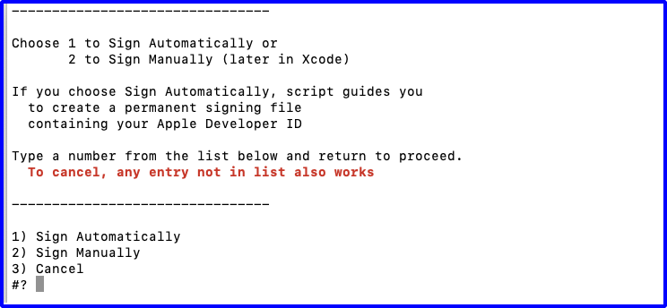
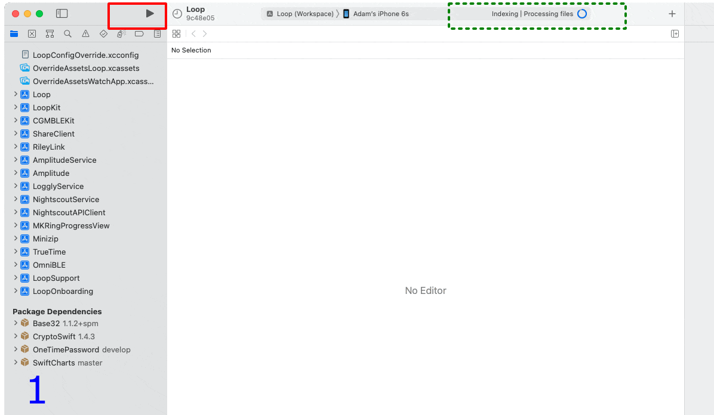

Loop Dev Script¶
The dev branch is tested by developers and users. Users who want to test dev must be willing to follow zulipchat and provide feedback to the developers. The developers are still actively making improvements, which has the potential to break things.
The method on this page is for Loopers who want to build the development code to get the latest features, but do not feel comfortable fetching and pulling the latest revisions. This page provides instructions for a lightly tested version of the dev branch. It is not always at the tip of the dev branch; think of it as a snapshot along the development path for dev.
- The minimum versions for dev when it is released will be iOS 15, Xcode 14.1
- The minimum versions required to build the snapshot of dev using the script on this page is also iOS 15, Xcode 14.1
- The versions of Loop in the script might not include the most recent changes in the dev branch
Update to Xcode 14.1
The minimum Xcode version is really 14.0, but that version had some "issues."
Update to Xcode 14.1, or newer, at your earliest convenience.
Please read these bullets.
- Follow posts in zulipchat, development stream
- Provide feedback to the developers if you notice any problems
- Be prepared to rebuild the app on your phone if an urgent problem is reported
The script to build Loop-dev, described on this page, will only be updated after observing reports on zulipchat, performing a few independent tests and using the modified Loop personally. Expect a delay between changes at the repository and adoption of those changes in the script.
If you are impatient, please see the information on the LoopWorspace page.
Required Reading¶
Please read the sections: What's going on in the dev branch and New with Loop 3 before continuing with this page.
All Loopers using this script need to be aware this is NOT released code. The dev version, prepared by the script, provides DASH support and has improved features when compared to the released code. Some new Loopers are starting with Loop-dev, using the script, because the onboarding with guardrails and the new user experience makes it easier to begin to use Loop.
Updated documentation is a work-in-progress located under the Loop 3 tab of LoopDocs
When will Loop dev be released as Loop 3?
There is no set time for the release.
The link below lets you view progress on the project of the most recent Loop-dev code. The "card" labeled Done gives you a list of what is already accomplished, but be sure to note items under Bugs to fix, In progress and Testing so you are aware of the known issues.
- Loop dev project page (prior to Loop 3 release):
WARNING: The script may lag the most recent dev updates. It may not pull in all the Done items listed at the link above.
Returning to Older Version
If you decide to return to Loop v2.2.x (or FreeAPS) after building Loop-dev on your phone, you will have to delete the Loop app and all other apps with the shared app group ID. This list includes Loop, FreeAPS, FreeAPS X, xDrip4iOS, Glucose-Direct, and the g5 Transmitter Reset app.
If you use Loop Follow, that does not need to be deleted.
For more information, click on Remove Apps with Shared App Group
Build Loop-dev using Github Actions¶
There is a new method for building Loop-dev. You cannot customize your code (yet) with this method.
Please click here for more information and the link to the directions.
Download Loop-dev¶
This section provides instructions to use the BuildLoopFixedDev script. It will download a "Fixed" version of the development branch for Loop or FreeAPS and then assist with the build process.
- The BuildLoopFixedDev script downloads the development branch and then selects a specific version that has been lightly tested
- When you use this script, you accept that this is not released code
- The developer may need to make changes that require you to delete your app and start over
- You are expected to use the zulipchat, development stream
- Pay attention to announcemnts
- Monitor for reports of problems other people are having
- Report any issue you experience
- The advantage of the script is:
- Experienced testers have gone before you to test new changes
- The script issues the
gitcommands required to download this version - The script assists you in configuring and building after download
The lightly tested version is identified by the commit, a 7-digit alphanumeric code. That code is appended to the folder name of the downloaded code under Downloads/BuildLoop. You can use finder to view the folder name after the script completes.
iOS 16: Developer Mode Required
If your phone is running iOS 16, please click on this Developer Mode link, follow the directions on that page and then return to this page. (If you continue on the page with the Developer Mode link, you will be building the released code, not the dev code.)
Loop-dev Version¶
The version of code that shows up under the Loop Settings screen will remain "Loop v2.3.0(57)(dev)" until Loop-dev is released. As part of the release process, the version number will be updated; but in the interim, it does not change when the code is modified.
If you need help with your app, the mentors need more information. Please issue a Loop Report when asking for help. The location for the Issue Report button is in a different location with Loop-dev; refer to Support. If you want to keep track yourself, refer to Identify Loop-dev Version
Start the BuildLoopFixedDev Script¶
Copy the line below that starts with /bin/bash by hovering the mouse near the bottom right side of the text and clicking the copy icon (should say Copy to Clipboard when you hover over it). When you click the icon, a message that says Copied to Clipboard will appear on your screen.
/bin/bash -c "$(curl -fsSL https://raw.githubusercontent.com/loopnlearn/LoopBuildScripts/main/BuildLoopFixedDev.sh)"
Paste the line into a Terminal window. Be sure to click anywhere in the terminal before trying to paste. (Ways to paste: CMD-V; or CNTL-click and select from menu or Edit-Paste at top of Mac screen.) Once the line is pasted, hit return to execute the script.
Read the screen (shown below). Type 1 and return if you understand the warning and agree.
- Please read what is on the screen as you progress.
- Adjust font size as directed if you have difficulty seeing the directions.

The next graphic warns you about building a development branch. The date and commit number in the script might not match the graphic below. The values in the script will be updated at appropriate times. The date indicates when that commit was added to the branch.
Enter your choice for app and hit return. Loop-dev is strongly recommended.

If you get errors when attempting to download, review this section of LoopDocs. (It is in the directions for building the released code.) Resolve the errors, if possible, then return to this page.
Wait for Download to Complete¶
This download can take from 3 minutes to 30 minutes depending on your download speed. You can leave the room and return later to check on progress. When you read the words in the terminal, as the script runs, you may see terminology you do not understand - don't worry - you do not need to understand enumeration or submodule or cloning. You only need to review the display to look for any error messages.
When the download completes, the "Check for successful download" message is displayed. You will need to scroll up in the terminal window to look through all the messages output to the terminal from the beginning of the download. (Your messages about "Submodule path" will be different because this graphic is from a different version of Loop.)

If you do not find the word error in your terminal window, continue with Download was Successful.
If you see the word "error" in your terminal window:
- Read the error message
- Try to figure out the problem
- If you need help, reach out to your favorite Loop Social Media site
- Tap any key other than 1, followed by return to cancel
Download was Successful¶
After the download step, the specific, lightly tested version of Loop-dev, indicated by the commit number, will be "checked out". You will see that commit number indicated by the line that includes "HEAD detached at". Remember, the specific number shown in your terminal may not match the graphic below.

Verify the word "error" is not shown in the terminal and proceed by typing 1 and hitting return.
Sign Targets¶
What does Sign Targets Mean?
"Sign Targets" in Xcode identifies who built the app. You cannot deploy an app to a phone without signing each target associated with that app.
This replaces several of the steps that used to be required to build Loop.
The first time you use the script, you will be asked how you want to sign the targets. If you have previously run the script and configured your computer with your Apple Developer ID, this question will not be shown. Skip ahead to Review LoopConfigOverride.xcconfig.
The next question, as shown in graphic below, is whether you will (1) Enter Apple Developer ID or (2) Sign Manually.
- If you are building with a paid developers account, choose option 1, and skip ahead to Create Permanent LoopConfigOverride.xcconfig
- If you plan to build to a simulator on your computer, choose option 2 and proceed with signing as described on the Build Loop page
- If you are building with a Free option, choose option 2 then:
- Review Loop-dev with Free Account
- Proceed with signing as described on the Build Loop

Loop-dev with Free Account¶
Yes you can build Loop-dev with the free account (Personal Team). There are some extra steps needed compared to the steps given for Loop 2.2.x on the Build with Free Account section.
If you know your Personal Team ID, you can enter it as directed in Sign Targets above, otherwise, do manual signing.
- You must remove additional capabilities, the complete list is:
- Loop Target: Push Notifications; Siri and Time Sensitive Notifications
- Watch App Extension Target: Siri
- Add the keyword
SIRI_DISABLEDto the LoopConfigOverride.xcconfig file- Examine the file and find the line that starts with
SWIFT_ACTIVE_COMPILATION_CONDITIONS = $(inherited) - Insert the new keyword (separated by a space) anywhere after
$(inherited)and before the slashes near the end of the line
- Examine the file and find the line that starts with
Create Permanent LoopConfigOverride.xcconfig¶
The following graphics show the terminal display after selecting option 1 to use Apple Developer ID.
- Graphic below:
- User is presented with instructions for getting Team ID from the Membership page
- After review, the user hits return
- User is presented with instructions for getting Team ID from the Membership page

- Graphic below:
- The instructions remain on the screen for reference
- The developer.apple.com web page (not shown) opened automatically in the browser after user hit return
- User obtains ID
- User enters ID in terminal and then hits return

After hitting return, the user can verify the entry.
Review LoopConfigOverride.xcconfig¶
Use Your Team ID
The ID, 0123456789, shown in the graphic below is for illustration purposes only. Your terminal display shows your Apple Developer ID (the Team ID on the Membership page).
If you previously built with this computer using the script, you already have the file configured. The review step is the same each time.
- Graphic below:
- The developer ID stored in the permanent file is displayed for review
- After review, hit return to continue and Plug in Your Phone
- OR - to modify the ID in the file, see Problem with the ID?

Problem with the ID?¶
If there is a problem with the ID that is stored on your computer, you can modify it before continuing. The instructions, shown in the terminal message, are repeated here:
To edit the LoopConfigOverride.xcconfig file with a different developer ID:
- Open finder, navigate to Downloads/BuildLoop
- Locate and double click on LoopConfigOverride.xcconfig
- This will open that file in Xcode
- Edit in Xcode and save file
You can now return to the terminal and hit return for the next step.
Build Loop¶
Plug in Your Phone¶
Refer to the graphic below. The messages in the terminal instruct you to:
- Unlock your phone
- Plug Phone into the computer
- (Optional) If you have an Apple Watch that has never had Loop on it
- Make sure watch is paired, unlocked and on your wrist
- If you have never "Trusted" this computer with these device(s), do so now
- A screen will pop up on your phone (and watch) asking if you trust the computer
- Select "Trust"
- After clicking on "Trust" the computer for phone and watch, phone should remain plugged in, but watch does not need to stay in proximity of the phone
- (Optional) If you have an Apple Watch that has never had Loop on it
- Now you are ready to hit return in the terminal window

The final action of the script is to
- Open a browser window displaying this section of LoopDocs
- Open Xcode
Final Messages¶
The final messages (not shown) let you know you can rerun the script with an up-arrow / return, you can close the terminal window, and you can use a specific command to configure the terminal to be in the LoopWorkspace folder for the downloaded code.
- Wait until you've successfully built the app before closing the terminal
- The command of the form:
cd /<specific-to-you-and-your-computer>/Downloads/BuildLoop/<download-folder-name>/LoopWorkspacecan be useful for some specific actions; most people will not need this.
Initial Xcode Screens¶
If you want to Customize Loop, best practice is to build the fresh download without changes. This ensures there are no problems with the download. Typically use a simulator instead of your phone when planning to customize. After successful build; customize, build to simulator and then build to your phone.
Xcode 14.x
With Xcode 14.x you will not see the green Loop icon in Xcode when selecting Loop(Workspace) the first time you build. Instead, you'll see an icon that looks like the Apple Store icon, in gray, as shown in the red rectangle at the top of the GIF below. After you build one time, then you will see the green Loop icon in Xcode as seen in the insets for frame 2 in the GIF below.
Refer to the GIF below:
- Frame 1: Xcode screen opened by the script after a fresh download
- Wait for indexing to begin
- If you see messages about fetching symbols or resolving packages, please wait until you see the Indexing message as shown in the GIF below just to the left of the dashed-blue rectangle
- Indexing makes finding text with Xcode faster; it does not need to complete before building
- The red rectangle indicates where you will change Loop to Loop (Workspace)
- The red x in the dashed-blue rectangle region indicates you need to fix a problem before building
- Wait for indexing to begin
- Frame 2: Inset shows the action needed to select Loop (Workspace)
- Frame 3: Loop (Workspace) selected but there's a red x in the dashed-blue rectangle region

Package Dependency Error¶
This error is no longer seen with Xcode 14.1 and later. But please - wait for the Fetching and Checking out messages in the upper right of the Xcode pane to finish before moving on.
If there is no red x in the dashed-blue rectange region on your Xcode screen, skip ahead to Start Build on this page.
Otherwise, tap on the red x in the dashed-blue rectange region:
- If your screen is similar to the figure below, perform the Fix for Package Dependency (repeated below - also found on Build Errors page)
- If you have a different error, search the Build Error page

Fix for Package Dependency¶
- Click on the folder icon (indicated by red square)
- Hold down the Control-Key and click the
Package Dependenciesrow to display the dropdown menu (shown in the inset) - Select Reset Package Caches from the dropdown menu and wait for Xcode to finish the reset process
- Once the package reset completes (updates in upper right of xcode will stop or say indexing), the red x should vanish
- You can start the build as soon as the Indexing message appears

Start Build¶
New Errors with Xcode 14
There are a couple of new errors seen by the community.
If you decided to sign targets individually, check to ensure that the Signing and Capabilities tab has All selected (refer to this link). If Release or Debug is selected instead, the code will not be signed. (Next time try using the script Enter Apple Developer ID method - it is very convenient and you won't have this problem).
There was also one instance where the permanent signing file was written but could not be read, see Unable To Read Included File for the solution.
Refer to the GIF below:
- Frame 1: Package Dependency resolved (no red x)
- Xcode is Indexing as seen in dashed-green rectangle region
- Indexing makes finding text with Xcode faster; it does not need to complete before building
- Click the "Play" button highlighted by red rectangle to start the build
- Xcode is Indexing as seen in dashed-green rectangle region
- Frame 2: Build has started
- Xcode is Building as seen in dashed-green rectangle region
- Frame 3: Build succeeded
- App is running as seen in dashed-green rectangle region
At this point, you can unplug your phone and acknowledge the Xcode message: Lost connection to the debugger on . . .. The square icon next to the play button goes away as soon as you unplug your phone from Xcode.
The Loop app on your phone closes (but does not quit) when you unplug the phone. Open the Loop app on your phone just to be sure.

New to Loop-dev¶
If this is your first build with Loop-dev, please review these pages before you continue:
- First Build on this phone: Onboarding
- Building Loop-dev over Loop 2.2.x or FreeAPS: Experienced Looper Onboarding
Carb Absorption Time Update¶
If you used earlier versions of Loop, please be aware that absorption times have changed.
Loop-dev Carb Absorption Times
Loop uses the absorption time for the carbs, along with your glucose readings, ISF and CR to recommend insulin dosing and estimate over time the carbs absorbed and carbs expected. See Algorithm: Prediction for more details.
- Loop-dev uses absorption times of 30 minute, 3 hours and 5 hours for the Candy, Taco, Pizza icons
- Loop 2.2.x used 2 hours, 3 hours and 4 hours
- The 30 minute (candy) time is for rapid acting carbs only
If you selected the candy icon for a complex meal, you told Loop to expect your glucose to rise rapidly. When that rapid rise does not materialize, you may find Loop predicts an unexpectedly low glucose because the algorithm assumes something must be affecting your glucose downward in a strong way.
If this happens to you, edit the carb entry to have a longer absorption time and Loop will recalculate the prediction.
Update Loop-dev¶
While Loop-dev is under active test, you should update frequently.
When building frequently, it is optional to update your provisioning profile with every new build. If you want to always ensure one year, follow the steps for Updating: Delete Provisioning Profiles for instructions.
Checking for updates every week is a good idea. Also - subscribe to all the streams on Loop Zulipchat to make sure you don't miss critical information.
You may choose to run the script each time you update. You can discard older versions of the download by using Finder and navigating to Downloads/BuildLoop. Only the most recent copy is required to build loop. Do not discard the Downloads/BuildLoop/LoopConfigOverride.xcconfig file - that is used to automatically sign your app so you can build.
You may prefer to use commands to fetch and pull the latest code without making a new clone.
Folder Name
If you decide to update code in the same folder, you should edit the folder name to remove the specific build commit appended by the script.
This is not required but may avoid confusion.
Open a Terminal in LoopWorkspace Folder¶
Refer to the graphic below. The Downloads folder in Finder is highlighted by the green rectangle on the upper left. The folder containing the code downloaded by the BuildLoopFixedDev script is highlighted by the red rectangle. Note the folder name indicates the app name and branch: Loop-dev, the date: 221016, the local time 1619 and the commit number: ca8a374. The LoopWorkspace folder below that (dashed blue rectangle) is the folder that needs to be opened in the terminal app.
- Open Finder
- Navigate to Downloads/BuildLoop and look for your download (highlighted by red rectangle) by name and date
- Open the folder to view LoopWorkspace (dashed blue rectangle)
- Hold down the CTRL key and click (or right-click) LoopWorkspace
- A menu appears - select
New Terminal at Folder(near the bottom of the list)
This new terminal window opens in the LoopWorkspace folder needed to perform git commands to update your downloaded copy (clone) when new updates are made to the repository.

- Some users like to use GitKraken to assist them (link takes you to a tutorial video).
- Some are comfortable with the command line git commands described on here.
Identify Loop-dev Version¶
The version of code that shows up under the Loop Settings screen will remain "Loop v2.3.0(57)(dev)" until Loop-dev is released. In order to identify which version of dev you have on your phone, you need the commit.
The commit is identified by a 7-digit alphanumeric code. That code was also appended to the folder name of the downloaded code under Downloads/BuildLoop as shown in the graphic above. You can use finder to view the folder name after the script completes. It also appears in the Loop Report, refer to Support for instructions on issuing a Loop Report. After you issue the Loop Report, look at the workspaceGitRevision number near the beginning of the report.
When you ran the BuildLoopFixedDev script, the instructions informed you of the commit.
Manual vs Automatic Signing¶
If you manually sign any of the targets, for example as an alternative way to get your Developer ID, the file in the Loop folder called Loop.xcodeproj/project.pbxproj is automatically modified to use that target name.
Once that happens, the feature that enables Xcode to use the LOOP_DEVELOPMENT_TEAM keyword in the LoopConfigOverride.xcconfig is no longer available.
To restore that capability, navigate in the terminal to the LoopWorkspace/Loop folder and issue this command:
git restore Loop.xcodeproj/project.pbxproj
Remove carthage¶
Completely Optional
This section is completely optional.
It is only provided to assist those who installed carthage for Loop and want to remove it.
-
You no longer need carthage, and can uninstall it from your system.
-
You do NOT need to uninstall carthage - your choice. If you share the computer with someone else, make sure they don't need carthage.
To determine if cathage is installed on your system, copy and paste this phrase into the terminal and hit return:
carthage version
-
If the response gives you a version number, then carthage is installed - you can uninstall it if you choose
-
If the response indicates, "carthage: command not found", you are done - it is no longer needed to build Loop-dev
If carthage is on your system, you can choose to remove it (completely optional with respect to building Loop with updated code).
Copy and paste the following line into the terminal window and hit return.
rm -rf /usr/local/bin/carthage
If the response says you don't have the privilege to do this - it is best to stop.
- That means carthage was installed by another user - not you.
- Check with them to make sure they don't require carthage on the computer.
- The presence or absence of carthage no longer affects the build process for Loop - so it is fine to leave it on your computer.
Assuming the previous line did not give an error, then copy and paste this line into the terminal window and hit return to complete carthage removal:
sudo rm -rf /Library/Frameworks/CarthageKit.framework
You will be prompted for a password when you hit enter on the second line. It is the same password you use in order to log into the computer. It will not echo to the screen.